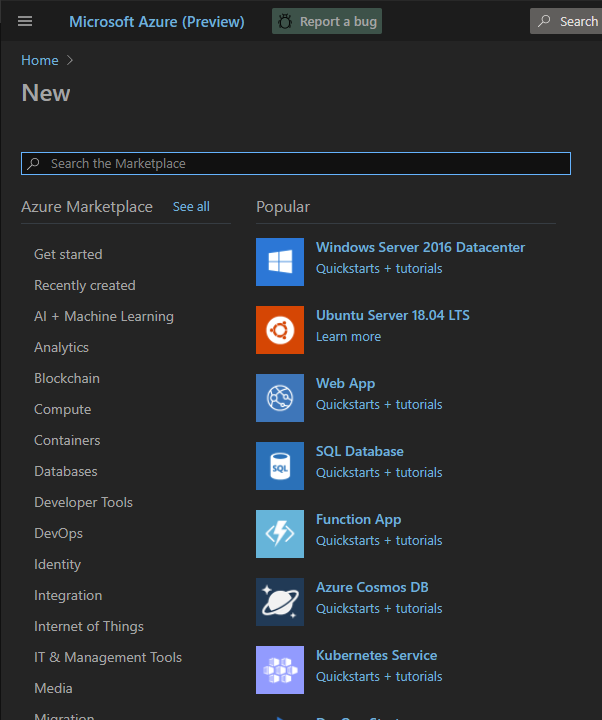

This extremely light Chrome extension modifies colors for the Dark theme used in the Azure Portal.
After installing extension choose Dark theme in the Portal settings and refresh the page.
As a result default Dark theme...

...will look like this one. Enjoy!
